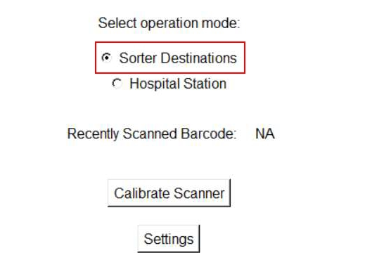

| Procedure ID | proc_verify_manually_removed_tote_returned_same_tote_id_original_sorter_position_v1 |
|---|---|
| Title | Verify a Manually Removed Tote Is Returned With the Same Tote ID to Its Original Sorter Position |
| Procedure Type | diagnostic |
| Primary Role | L1_support |
| Support Safe | Yes |
| Validation Status | needs_sme_review |
| Merge Status | source_finalized |
Verify that a tote manually removed from the sorter stand is returned with the same Tote ID to its original sorter position so the system maintains the correct tote-to-location association and avoids operational errors.
Use this procedure during sorter manual tote handling when a tote has been manually removed from the sorter stand and must be checked before or during return to service. This applies to manual operations at the sorter supported by the Zebra scanner, including tote replacement, maintenance, repair, and damaged tote handling contexts described by the source.
Responsible role: L1_support
Instruction:
Identify the tote that was manually removed from the sorter stand and determine the original sorter position from which it was removed before returning it.
Expected result:
The removed tote and its original sorter position are clearly identified.
Screens / Images:
Stop or Escalate If:
Responsible role: L1_support
Instruction:
Check the Tote ID of the tote being returned using the documented scanner process or visible Tote ID information supported by the source. Where the scanner workflow is used, verify the Tote ID is displayed correctly.
Expected result:
The Tote ID of the tote being returned is available for comparison.
Screens / Images:
Stop or Escalate If:
Responsible role: L1_support
Instruction:
Verify that the tote being returned has the same Tote ID as the tote that was removed.
Expected result:
The Tote ID of the returned tote matches the Tote ID of the removed tote.
Screens / Images:
Stop or Escalate If:
Responsible role: L1_support
Instruction:
Verify that the tote is being returned to its original position on the sorter stand.
Expected result:
The tote is aligned with the same sorter position from which it was removed.
Screens / Images:

Stop or Escalate If:
Responsible role: L1_support
Instruction:
Confirm that the tote-to-location association is preserved by returning the same Tote ID to the original position. If this condition is not met, use rescanning as required by the source to properly associate the tote with its designated location.
Expected result:
The system association is preserved because the same Tote ID has been returned to the original position, or rescanning is identified as required.
Screens / Images:
Stop or Escalate If: